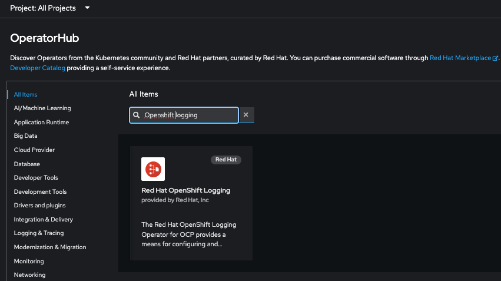
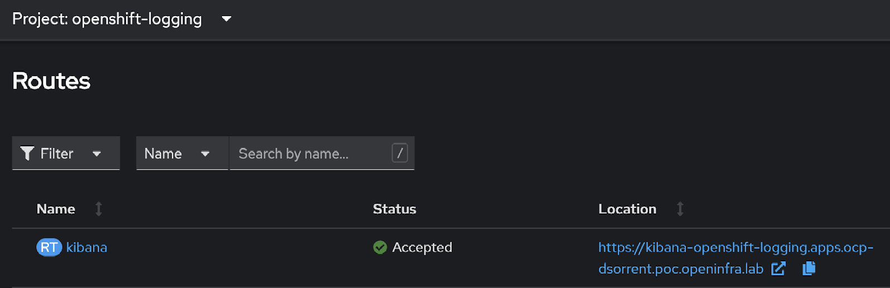

Configure Logging
Official Documentation
Process
If pushing the logs to an external ElasticSearch instance, you will need the following pre-requisites:
- The Certificate CRT file which contains the CA information for the remote Elastic Search instance
- Username & Password to authenticate to Elastic Search with
If configuring Logging to push logs to an ElasticSearch instance running on the same cluster, these items will be automatically configured by the Logging Operator.
Install Loggging Operator
On the left go to Operators -> OperatorHub and search for Openshift Logging Operator:

Click on Red Hat Openshift Logging, click Install, review the defaults and click Install.
Once installed, click View Operator and go to the Cluster Logging tab. Click Create Cluster Logging.
Accept the defaults and click Create.
Configuring Log Forwarding
Using an ElasticSearch Instance on the same Cluster
Go to the Cluster Log Forwarder tab. Click Create Cluster Log Forwarder.
Switch to the YAML view and make the following changes to:
- Remove the pipeline to send the logs to a remote server
- send the logs to the local (default) ElasticSearch provider
apiVersion: logging.openshift.io/v1
kind: ClusterLogForwarder
metadata:
name: instance
namespace: openshift-logging
spec:
pipelines:
- inputRefs:
- application
- audit
- infrastructure
outputRefs:
- default
name: enable-default-log-store
Create.
Using an External ElasticSearch
Create the ElasticSearch secret for the Remote ElasticSearch Instance:
oc create secret generic -n openshift-logging elasticsearch \
--from-file=tls.key=tls.key \
--from-file=tls.crt=tls.crt \
--from-file=ca-bundle.crt=${CA_BUNDLE} \
--from-literal=username=${USERNAME} \
--from-literal=password=${PASSWORD}
Go to the Cluster Log Forwarder tab. Click Create Cluster Log Forwarder.
Switch to the YAML view and make the following changes to:
apiVersion: "logging.openshift.io/v1"
kind: ClusterLogForwarder
metadata:
name: instance
namespace: openshift-logging
spec:
outputDefaults:
elasticsearch:
structuredTypeKey: kubernetes.labels.logFormat
structuredTypeName: nologformat
outputs:
- name: remote-elasticsearch
secret:
name: elasticsearch
tls:
insecureSkipVerify: true
type: elasticsearch
url: 'https://[REMOTE ES IP]:[REMOTE ES PORT]'
pipelines:
- inputRefs:
- application
- audit
- infrastructure
labels:
logtype: poc
name: forward-to-remote
outputRefs:
- remote-elasticsearch
parse: json
EOF
Accessing Kibana
On the left, navigate to Networking -> Routes and change to the openshift-logging project and you will see a route for kibana.

Click the Location route to open Kibana, login and you’ll need to create indices for infra-*, audit-* and app-*